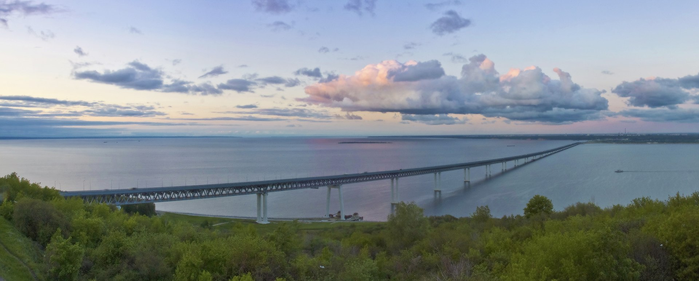
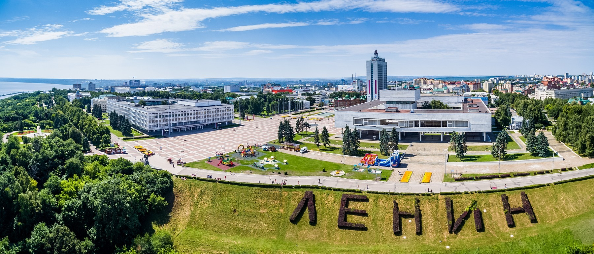
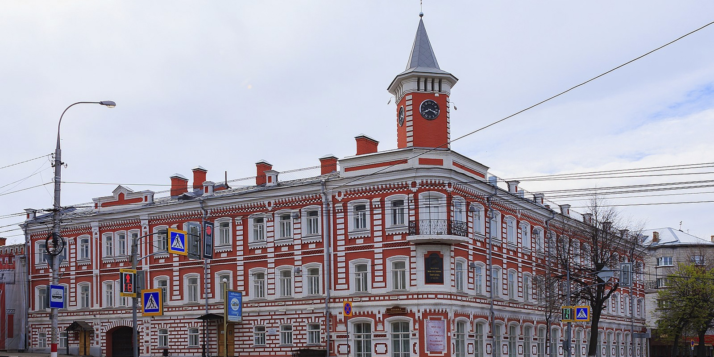

Ульяновск - это прекрасный город, находящийся на брегах Волги.

Ульяновск - это город великих людей, Ленин и Карамзин, Гончаров и Керенский.

Ульяновск - это город с 400-летней историей, который всегда прекрасен.

Про Ульяновск кратко.
Ульяновск - город полумиллонник, распложенный на Расположен на Приволжской возвышенности, на берегах рек Волги (Куйбышевское водохранилище) и Свияги, в месте сближения их русел. Находится в 890 км к востоку / юго-востоку от Москвы. По населению 22-ой город России. Основан Богданом Хитрово по указу царя Алексея Михайловича в 1648 году как крепость Синбирск для защиты восточных границ. Указом Президента Российской Федерации от 2 июля 2020 городу было присвоено звание «Город трудовой доблести».
Климат умеренно континентальный, несколько суше, чем в Москве. В последние годы климат стал мягче, а среднегодовая температура повысилась (до 1991 года составляла 3,5 °C, с начала 2000-х годов — около 5 °C). Также количество пасмурных и облачных дней в году увеличивается. Доминируют слабые и умеренные ветры западного направления. Наименее облачные месяцы в году — апрель и июль, а самый пасмурный — ноябрь.